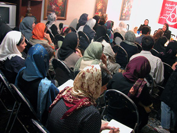
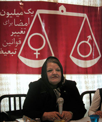
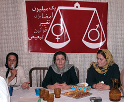
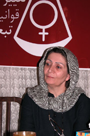

پذيرش > تریبون > گزارش كمپين > كم لطفي به زنان با نام لايحه حمايت از خانواده؟!
 بررسی لایحه حمایت خانواده از منظر حقوقی، جامعه شناسی، روان شناسی بررسی لایحه حمایت خانواده از منظر حقوقی، جامعه شناسی، روان شناسی

 كم لطفي به زنان با نام لايحه حمايت از خانواده؟! كم لطفي به زنان با نام لايحه حمايت از خانواده؟!
12 شهریور 1386 - گزارش : محبوبه حسین زاده / عکس راحله عسگری زاده - نسخه قابل چاپ

لايحه جديد حمايت از خانواده كه براي تصويب به مجلس ارائه شده است، روز 11 شهریور در نشستی كه به همت فعالان کمپین یک میلیون با حضور اعضای کمپین و فعالان امور زنان برگزار شد، از منظر حقوقي، جامعه شناسي و روان شناسي مورد بحث و بررسي قرار گفت. لايحه اي كه به نظر فريده غيرت، اطلاق حمايت از خانواده بر آن بسيار بسيار بي معنا است و به گفته نسرين ستوده، نام لايحه تزلزل خانواده براي اين لايحه مناسب تر است. دكتر شهلا اعزازي هم اين لايحه را از منظر جامعه شناسي مورد بررسي قرار داد؛ لايحه اي كه در آن خيانت به طور قانوني ترويج مي شود. دكتر شيوا دولت آبادي هم از تاثيرات منفي حق خيانت قانوني مردان بر زندگي زنان و كودكان ايراني سخن گفت.

فریده غیرت : اطلاق حمایت از خانواده بر این لایحه بسیار بسیار بی معنا است
زهره ارزني، حقوقدان، فعال زنان و وكيل دادگستري كه رياست پانل اول را برعهده داشت، با انتقاد از اين لايحه گفت: در لایحه اي كه نام حمايت از خانواده بر آن گذاشته شده، نه تنها اقدامي براي حمايت از زنان و خانواده صورت نگرفته بلكه عقبگرد هم نسبت به حقوق زنان وجود داشته است. و در اين لايحه حق ازدواج مجدد بدون رضايت زن اول به مردان داده شده است واز ازدواج موقت نيز حمايت شده است با عدم الزام ثبت آن.
فریده غیرت، اولين سخنران اين مراسم، با اعتراض شدید به لایحه حمایت از خانواده گفت: به نظر من خیلی کم لطفی کردند که نام حمایت از خانواده را بر این لایحه گذاشتند. بعد از تلاش های چشمگیری که از طریق زنان صورت گرفته و کمپین یک میلیون امضا یکی از موثرترین این اقدامات بوده است، ارائه این لایحه بسیار جای سوال دارد. حمایت از خانواده زمانی صورت می گیرد که قوانین تبعیض آمیز علیه زنان و خانواده را مورد بررسی قرار دهند. حمایت وقتی صورت می گیرد که قانون طلاق را بررسی کنیم و مساله حضانت را مورد بررسی قرار دهیم. حمایت وقتی است که مادر بتواند برای فرزندش تصمیم گیری کند و مسائل دیگری که همه آن در کمپین يك ميليون امضا فهرست شده و مورد بررسی قرار گرفته است.به همین دلیل اطلاق حمایت از خانواده به این لایحه بسیاربسیار بی معنا است این لایحه در حقیقت لایحه نحوه دادرسی به اختلافات خانواده است. این لایحه توسط معاونت توسعه قوه قضائیه تهیه شده است و به هیات دولت داده شده و هیات دولت با تغییراتی آن را برای تصویب به مجلس داده است.
وی ادامه داد: در مقدمه این لایحه ذکر شده که لایحه در پاسخ به اصل 21قانون اساسی تهیه شده است. اما سوال اینجاست که چرا فقط بند 3اصل 21مورد توجه قرار گرفته است. در حالی که این اصل که راجع به حقوق زنان است دارای 5بند است که شامل؛ ایجاد زمینه های مساعد برای رشد و شخصیت زن، حمایت از مادران در دوران بارداری و حضانت فرزند و حمایت از کودکان بی سرپرست، ایجاد دادگاه برای حفظ کیان خانواده ، بیمه برای حمایت از زنان سالخورده و اعطای قیمومیت به مادران می شود. ولی از همه این موارد فقط بند سه که مربوط به آئین دادرسی است مورد توجه قرار گرفته است.
این حقوقدان که چندین سال نائب رئیس کانون وکلای دادگستری بوده است، افزود: در همین لایحه نکاتی هست که باید مورد توجه قرار گیرد. مساله ای که خیلی مهم است مساله ثبت ازدواج است. در این لایحه ضمانت اجرا در مورد ثبت متعه حذف شده است یعنی اگر برای زنان تامین خاطری با ثبت نکاح متعه صورت می گرفت، ثبت حذف شده و گفته شده به صورت دلخواه و با تمایل زوجین که این ایراد بزرگی است. اما تاکید شده در این لایحه بر برگزاری دادگاه خانواده با حضور رئیس دادگاه و دو مستشار که یکی از آنان حتما باید زنی باشد که دارای رتبه قضائی است. مساله اینجاست که بانوانی که دارای این رتبه هستند در حال حاضر در دادگاه خانواده حضور دارند ولی دارای حق آشنای رای نیستند. در این لایحه گفته شده که اتخاذ تصمیم با اکثریت اعضا خواهد بود ولی باز حق رای زنان مسکوت گذاشته شده است که باید به این موضوع توجه شود.
وی، تجویز ازدواج مجدد را از دیگر موارد مهم این لایحه دانست:مساله مهم دیگر تجویز ازدواج مجدد است که در حال حاضر این ازدواج باید با اجازه همسر اول باشد و در قانون، مجازات کیفری هم برای از دواج مجدد بدون اجازه همسر در نظر گرفته شده بود اما در این لایحه ازدواج مجدد مردان با اجازه دادگاه و منوط به تمکن مالی مرد و تشخیص دادگاه در برقراری عدالت توسط مرد صورت می گیرد. کدام مردی در دنیا پیدا می شود که ازدواج دوم انجام دهد و ادعا کند که همسر اول را به اندازه همسر دوم دوست دارد. عدالتی که در اسلام هست و من قویا تاکید می کنم که این عدالت عدالتی نیست که در مورد مسائل مادی باشد. در قرآن به صراحت آمده است: بترسید از این که نتوانید عدالت را بین آنها برقرار کنید. اگر از قوانین اسلام، ازدواج مجدد را می گیریم اسلام این را نمی گوید. اسلام می گوید عدالت باید کامل برقرار شود و عدالت هم در اسلام معنا دارد. عدالت کامل به این معنا نیست که اگر مردی تکمن مالی داشت دادگاه بگوید می توانید چند همسر بگیرید. این موضوع با نظام جهان امروز، نظام حقوق بشر و نظام خود اسلام هم منطبق نیست. اما متاسفانه این مورد را دولت به لایحه اضافه کرده است و من امیدوارم که زنان نماینده مجلس و نمانیدگانی که دلسوز خانواده و زنان هستند این لایحه را به این شکل تصویب نکنند.
اين حقوقدان و وکیل دادگستری همچنين با اشاره به بحث هایی که چند ماه قبل در مورد گسترش ازدواج موقت از سوی وزیر کشور مطرح شده بود، گفت:هیچگاه از متعه به عنوان ازدواج نام نبرده ام و خیلی از فقها هم کلمه ازدواج موقت را به کار نمی برند. متعه یعنی تمتع؛ تمتع در مقابل یک مزد. این را نباید ازدواج بدانیم چون در قانون و شریعت ما ازدواج دو نوع عنوان نشده است و در تعریفی که از ازدواج شده است نگفته اند ازدواج دو نوع منقطع و دایم است و در تعریفی که برای ازدواج کرده اند و یعنی حفظ بنیان خانواده را در ازدواج دائم می بینم.

نسرین ستوده : اسم این لايحه را به جای حمایت خانواده ، تزلزل خانواده بگذارند
سخنران بعدي اين مراسم، نسرين ستوده، وكيل دادگستري و فعال حقوق زنان بود. وي با اشاره به اين كه اگر اسم اين لايحه را لايحه تزلزل خانواده مي گذاشتند به واقعيت نزديك تر بود، گفت: اگر اسم این لایحه را تزلزل خانواده می گذاشتند به واقعیت نزدیک تر بود چون کدام عقل سلیمی می پذیرد که خانواده با حق تعدد زوجات یکی از طرفین تقویت می شود. ما کاملا در جهت تزلزل خانواده گام برمی داریم و حمایت واژه معکوسی است که بر این لایحه گذاشته شده است.
وي ادامه داد: وقتی این لایحه را می خواندم باز این تصویر برايم بازخوانی شد که آیا خانواده ای که این همه از آن صحبت می شود و 30سال است كه در نظام جمهوري اسلامي از آن به عنوان نهادي مقدس نام برده مي شود، زن و مرد را به یک اندازه برای حمایت از این نهاد مسوول قرار داده است.
ستوده افزود: مدام بر اين طبل مي كوبند كه زنان به دليل احساساتي بودن نمي توانند قاضي باشند و قضاوت کنند اما همین احساسات زنان در مورد کودکان شان و در مورد تعدد زوجات و در خانواده نادیده گرفته می شود چرا که قانون گذار داراي تفکر مردانه مایل است که تمام روابط خانوادگی را در قالب مسائل مالی مورد توجه قرار دهد.
وي با اشاره به مواد اين لايحه در مورد حضانت كودكان گفت: این لایحه همچنان بر ریاست مردان بر دادگاه های خانواده اصرار دارد و در موادي هم اختيارات قضات و شوراهاي حل اختلاف را گسترش داده است. همه ما مي دانيم رياست مردان بر دادگاه هاي خانواده، چه تبعاتی را به ارمغان آورده است. همچنين در دو ماده 39 و 40 اين لايحه در مورد حضانت اطفال آمده است كه اگر دادگاه صلاح بداند می تواند حضانت طفل را از پدر و مادر بگیرد و آن را به نهاد دیگری بسپارد. این البته اشکالی ندارد و در حقیقت الان هم این اختیار به دادگاه داده شده اما وقتي رياست دادگاه با مردان است، خیلی طبیعی است که از احساسات زنان درک پائین تری داشته باشند و بخواهند حکم را به نفع همنوعان خود صادر كنند. همچنين به موجب قانون فعلی پدر و مادری که از هم جدا می شوند حضانت طفل به هر کدام از آنان که داده شود آن شخص نمی تواند بچه را از حوزه قضائی که در آن وجود دارند خارج کند و به ویژه نمی توانند کودک را به خارج از كشور ببرند تا کودک به سن 18سالگی برسد. اما در لايجه جديد گفته شده كه به حکم دادگاه می توانند این کار را انجام دهند و اين حكم دادگاه همیشه برای ما خاطرات بدی داشته است چون مردان بيشتر به امكانات مالي دسترسي دارند و مي توانند با بردن كودك به خارج از كشور، او را برای همیشه از دسترس مادر خارج کنند.
ستوده در مورد ماليات بر مهريه كه در لايحه جديد تعيين شده است، گفت: اين كه ميزان مهريه در كشور بالا رفته احتياج به بحث هاي جامعه شناسي دارد. در چند سال اخير از راه هاي مختلف به مقابله با مهريه بالا پرداختند و حتي لایحه ای ارائه كردند كه براي مهريه سقف تعيين كرده بودند اما با مخالفت فقها، اين مورد راي نياورد. در لايحه جديد تعيين كرده اند كه در زمان ثبت ازدواج، از مهریه های غیرمتعارف مالیات گرفته شود و هرچه ميزان مهریه بالاتر باشد به صورت تصاعدی مالیات آن بالاتر مي رود. اين در حالي است كه در زمان ثبت ازدواج پولی به عنوان مهریه رد و بدل نمی شود و نتیجه این تصمیم این می شود که شرایط ازدواج برای مردان به مراتب سخت تر مي شود. نكته ديگر اين است كه در همه جاي دنيا، مالیات بر هر درآمدی صورت می گیرد اما در اینجا هنوز درآمدی و رد پولی صورت نگرفته که باید مالیات هم پرداخت شود. آیا بهتر نبود نويسندگان لايجه به اين موضوع فكر مي كردند.
اين وكيل دادگستري درباره مجارات هاي جايگزين كه در اين لايحه در نظر گرفته شده گفت:در قانون فعلی عدم ثبت ازدواج ها جرم محسوب می شود و مجاراتش تا یک سال حبس تعزیری است ولي در اين لايحه تا دو میلیون تومان جریمه نقدی در نظر گرفته شده است. برداشتن مجازات حبس در اين مورد كاملا به نفع مردان است چون هم اكنون نيز كم نيستند زنان ايراني كه با مردان افغانی ازدواج كرده اند و ازدواج شان به ثبت نرسيده است. و اما مورد ديگر در مورد حق حضانت است. اگر پدر و مادری بعد از طلاق، فرزند را به طرفی که حضات وی را بر عهده دارد مسترد نکند دادگاه براي وي حبس تعيين مي كرد تا جودك را تحويل دهد و اين حكم نوعي فشار بود كه بيشتر زنان مي توانستند از آن بهره ببرند به دليل ضمانت اجرايي قابل توجهي كه داشت اما اكنون در اين لايحه مجازات حبس حذف و به جریمه نقدی تبدیل شده است.
ستوده در پايان سخنان خود، افزود: بسیاری از فعالان دیگر جنبش های اجتماعی می گويند که ما تصور نمی کردیم زنان حاضر باشند هزینه های به این سنگینی براي مطالبات شان بدهند و حالا بعد از اين همه سال تلاش جنبش زنان و بعد از این همه اظهارات غیررسمی و رسمي مسئولان ارشد نظام در مورد برابري حقوق زنان و مردان در همان بزنگاه تاريخي ما با لایحه ای مواجه مي شويم که سرنوشت ما را مشخص می کند. در اين شرايط وقتي قانون نگاه تبعیض آمیز به زنان را رواج می دهد، بسیاری از دوستان این پیشنهاد را مطرح کرده اند و من هم به سهم اندک خودم این را مطرح مي كنم که اگر لایحه به صحن علنی مجلس کشیده شود، زنان براي احقاق حقوق خودشان در جلوی مجلس تجمع خواهند کرد.

داستان زنی از یوگسلاوی
در آخر اين پانل، شركت كنندگان به سخنان زني اهل يوگسلاوي گوش دادند كه سي سال قبل پس از ازدواج با مردي ايراني همه پس انداز خود را برداشته و راهي ايران شده و در تمام سالهاي جنگ و ....با آرايشگري، تامين هزينه هاي زندگي را بر دوش كشيده تا شوهرش نيز توانسته سر كار برود تا اين كه توانسته اند صاحب خانه، ويلا، شركت و ...شوند اما از سال قبل، شوهرش مشكلات مالي را بهانه كرده و زن نيز براي حل مشكل شوهرش، راضي به فروش خانه و ...شده است اما دو هفته قبل و در سالگرد ازدواج شان، مرد به او گفته كه ده سال است كه با زن ديگري ازدواج كرده است...حالا اين زن درمانده و بدون هيچ پس اندازي، دست به دامان قانون و وكيل شده است تا براي او چاره اي بيابد اما وكيل او با توجه به تبعيض هاي قانوني مسلم نسبت به زنان، نمي تواند هيچ راه چاره اي به اين زن نشان دهد.

شهلا اعزازی: دولت، خيانت را به صورت شرعي وارد خانواده كرد
رياست پانل دوم را شهلا انتصاري، فعال حقوق زنان، برعهده داشت. در اين پانل تاثيرات جامعه شناسي و روان شناسي اين لايحه بر زندگي زنان و خانواده هاي ايراني مورد بررسي قرار گرفت.
دکتر اعزازی،استاد دانشگاه، این لایحه را از منظر جامعه شناختی مورد بررسی قرار داد. وی گفت: این چه شرایطی است که همه افراد و گروه های مختلف کشور اعم از زنان، دانشجویان، کارگران، گروه های قومی و مذهبی و ...یک سلسله خواست ها و درخواست های مشخص اجتماعی و سیاسی دارند و آن را مطرح می کنند. همه این افراد کار می خواهند، از تورم و بیکاری، هزینه های مسکن و ... گلایه دارند اما به جای این که به درخواست های منطقی این افراد پاسخی داده شود، دولت مدام از ازدواج، خانواده مقدس، ازدواج دانشجویی، مهریه عندالمطالبه و ...صحبت می کند.
این جامعه شناس افزود: به نظر می آید که نوعی دوگانگی در دید دولت نسبت به ازدواج و خانواده وجود دارد. یک دید مردسالار مدرن است که در نیمه دوم قرن 20در اروپا و آمریکا بوجود آمد و اکنون در حال محو شدن است البته با تلاش فمینیست ها. و دید دیگر، یک دید مدرن مردسالاری پیش صنعتی است که هنوز در میان دولتمردان ایران وجود دارد، یعنی نگاه دولت به زن نگاهی است که در جامعه پیش صنعتی وجود دارد. تلاقی این دو نگاه با هم، هر روز مشکلات اجتماعی جدید و جدیدتری را در جامعه ایرانی به وجود آورده است؛ مشکلاتی که تا پیش از این حتی وجود هم نداشتند و مثلا امروز می بینیم که چهارهزار مرد به خاطر درخواست مهریه توسط زنان شان در زندان به سر می برند.
وی ادامه داد: من امروز از دید جامعه شناسی محافظه کار صحبت می کنم. کلیه مفاهیم در طول زمان دچار تغییر می شوند از جمله مردسالاری دوران باستان که مردان حاکمیت مطلق بر زنان و کودکان داشتند در قرن 19تغییر کرده است و اگر اولین جنبش های زنان می گفتند که زنان هم حق حیات دارند امروز از نابرابری جنسیتی در حوزه کار و مشکلاتی که در حوزه عمومی وجود دارد و عدم دسترسی برابر در پارلمان صحبت می کنند. این تغییرات بوجود آمده، نتیجه تلاش زنان و دگرگونی جامعه است و همین موضع باعث شد که در سال 1950تصویری از خانواده در آمریکا ارائه شد که البته بعدها خیلی هم مورد انتقاد قرار گرفت و آن این بود که خانواده امروز، کارکردی برای بقای جامعه دارد و یکی از کارکردهایش تربیت خانواده و کودکان است و اما یک تغییر در خانواده بودجود آمده بود و آن این بود که حالا دیگر دختر ها و پسرها همدیگر را به صورت آزادانه انتخاب می کردند و می گفتند که عشق عامل اصلی ازدواج است و ازدواج به علت عشق و صمیمیتی که در آن وجود دارد، می تواند کارکردهای اجتماعی خود را که جامعه پذیری کودکان است، انجام دهد. کودکان در خانه از این عشق و محبت نیرو می گیرند و نبود همین عشق و علاقه باعث می شود کودکان نابهنجار شوند و اما در همین جامعه شناسی مردمدار گفته شد که خیانت در زندگی خانوادگی جایی ندارد چون کودکان نابهنجار می شوند و رفتار نامتعارف مي كنند و به تبع جامعه هم از هم می پاشد.
اعزازی گفت: اما در جامعه ما این نظریه را گرفتند و خانواده مقدس به طور دائم تکرار می شود مضاف بر این که تکرار می شود که رفتار نابهنجار کودکان ناشی از خانواده است و بزهکاری و اعتیاد از داخل خانواده بیرون می آید و اما موضوع اصلی این نظریه که عشق را ضامن خانواده می داند برداشته شد و با اتکا به جامعه شناسی مرسالاري پیش صنعتی، نیاز جنسی مردان جایگزین عشق شد و خانواده مورد نظر جمهوری اسلامی به صورت ناقص تشکیل شد.
وی تاکید کرد: درصد زنان شاغل در كشورما فوق العاده پايين است و بقيه كار نمي كنند و آناني كه كار مي كنند درآمدشان كفاف زندگي در حد استاندارد را نمي دهد بنابراين زنان مجبور مي شوند شوهر پيدا كنند. حتي بسياري از زنان مشكلات را تحمل مي كنند به خاطر اين كه اگر طلاق بگيرند و فرزند هم داشته باشند، مشكلات مالي شان بيشتر مي شود. در اين شرايط دولت، دو متغیر برهم زننده خانواده؛ یعنی ازدواج موقت و ازدواج مجدد، را مطرح می کند باعث می شود که در واقع عنصر خیانت را در خانواده به صورت شرعی وارد می کند و می گوید شما می توانید به همسران تان خیانت کنید و من اين را هيچ جاي دنيا نديدم. از این شرایط قدرتمندان جامعه یعنی مردان نفع می برند و اما برنده دیگر دولت است چون یک وظیفه دولت طبق قانون اساسي این است که به وضعیت آحاد مردم رسیدگی کند. دولت ما به جاي اين كه در مورد زنان مطلقه، بيوه و ...فكري كند مساله مردان را بر دوش زنان مي اندازد و به جاي اين كه كاري براي زنان فراهم كند آنان را سوق مي دهد به سمت ازدواج موقت و ازدواج مجدد. و در اين حال مردان را با يك سري امتيازهاي ظاهری وادار مي كند كه خرج زنان را بدهند.
این استاد دانشگاه ادامه داد: دولت ایران زیر عنوان شرع، همان روابط آزاد جنسی را که در اروپا و غرب رواج دارد، در ایران رواج می دهد اما در غرب قبل از ازدواج، رابطه آزاد جنسی وجود دارد اما ازدواج با این مدل های سنگین در آن کشورها رواج ندارد اما در جامعه ما که هنوز روابط جنسی برای زنان پسندیده نمی شود، از ازدواج موقت و مجدد صحبت می شود و این خود جای سوال دارد.
وی افزود: در جامعه ما ناهنجاری های زیادی اتفاق می افتد و پیش بینی من این است که با این لایحه درصد طلاق زیاد می شود و مشکلات مربوط به حضانت کودکان در دادگاه ها زیاد می شود و ما مواجه می شویم با انبوه دخترانی که از راه صیغه گری زندگی خود را تامین می کنند و اما بدترین مورد اشاعه ایدز در ایران است برای این که ازدواج موقت و ازدواج مجدد خود میزان خطر گسترش ایدز در جامعه را افزایش می دهد. حالا علاوه بر این که ازدواج دوم و صیغه مصداق خشونت خانوادگی است بماند چون ما با یک گروه سه نفره روبرو هستیم و این احتمال وجود دارد که دو نفر با هم علیه دیگری دست به یکی شوند.
اعزازی در پایان سخنان خود گفت: من پیشنهاد می دهم که مردان و پسران هم نامه ای بنویسند و اعتراض کنند به این که دولت ایران مدام کلیشه های جنسیتی مردان را تبلیغ می کند و مدام از تمایلات و قدرت جنسی مردان و غریزه و ...صحبت می شود و این اهانت به مردان است . مردان نامه ای بنویسند و بگویند ما این ویژگی ها را نداریم و زنان را برابر با خودمان در نظر می گیریم و ما به علت عشق و علاقه است که با یک دختر ازدواج می کنیم.

شیوا دولت آبادی : با اين لايحه خيانت قانوني مي شود و بي وفايي شكل موجهي پيدا مي كند
شيوا دولت آبادي، فعال حقوق زنان و روان شناس، سخنران بعدي اين مراسم بود. وي گفت: وقتي كه به انسان نگاه مي كنيم مي بينيم كه از دوران نوزادي در يك فرآيند، رشد خود را طي مي كند و اين رشد در يك بستر عاطفي شكل مي گيرد. يعني حمايتي كه از بشر مي شود او را تبديل به موجود و هويتي مي كند كه به تدريج خود را بر مي تاباند و در حقيقت عواطفي كه در خانواده در يك سال اول به او مي شود، پايه هاي اصلي و عاطفي هيجاني شخص را شكل مي دهد. از سوي ديگر نياز به يگانه بودن، نيازي بسيار اساسي از پايه سلامت دوران بشر است.
وي ادامه داد: هميشه در طول تاريخ، بي وفايي بوده است اما بي وفايي شرعي و رسميت يافته كه در اين لايحه هم از آن نام برده مي شود، ايجاد زمينه اي براي تخريب هويت افراد، يگانگي و چيزي است كه هويت افراد را درون خانه معنادار مي كند. اگر اعتماد در يك رابطه و زندگي خانوادگي وجود نداشته باشد، هميشه اين نگراني براي زن وجود دارد كه قابل جايگزيني است و مرد هم با قلدري از طريق قانون اين كار را مي تواند انجام دهد. پس اين قانون با ميل به يگانگي به عنوان بخش مهم و پايه اي سلامت روان، مغاير و مخالف است.
دولت آبادي از تاثير اين لايحه بر كودكان نيز گفت: وقتي به انسانها به عنوان موضوع سلامت روان نگاه مي كنيم مي بينيم نحوه دلبستگي او به مادر و اطرافيان داراي اهميت زيادي است. پس بايد ديد اين دلبستگي به مادر چقدر براي كودك ايمن است؟ اضطراب هاي كشنده اي كه بزرگسالان دارند، ريشه در تجربه گذشته دارد. اضطراب هايي از وجود انسان جدا مي شوند كه به عنوان اضطراب هاي بيمارگونه خود را نشان مي دهند. مادر ناايمن هرگز نمي تواند انسان قوي تربيت كند. هر وقت جايگاه زن در خوانده سست شود، ما با زناني مواجه مي شويم كه كودكاني بدون مسئوليت پايدار و عقده اي براي جامعه تربيت مي كنند.
وي افزود: از سوي ديگر تحقيقات نشان مي دهد كه كودكاني كه رابطه ايمن با مادران شان نداشته باشند اعتماد به نفس كمي دارند و به بزهكاري تمايل بيشتري دارند و با اين لايحه، نهاد خانواده سست تر از آن چه كه هست، مي شود. چرا بايد اسم اين لايحه حمايت از خانواده باشد وقتي كه با اين تفاسير خانواده اي وجود ندارد.
دولت آبادي تاكيد كرد: وقتي با اين لايحه خيانت قانوني مي شود و بي وفايي شكل موجهي پيدا مي كند هم در مردان و هم در زنها تاثير منفي مي گذارد و مردان تك همسر فكر مي كنند كه دارند به زنان شان لطف مي كنند و زنان نيز بايد بيشتر به شوهران شان بها بدهند تا آنان با زن ديگري ازدواج نكند اين در حالي است كه بايد برابري وجود داشته باشد.
در پایان این برنامه بیانیه ای در اعتراض به لایحه حمایت خانواده قرائت شد و اولین امضاها برای اعتراض به این بیانیه زده شد.
ارسال به
بالاترین
،
توییتر
،
فریندفید
،
فیسبوک
در همين بخش :
 دهمین دورۀ مراسم تندیس صدیقه دولت آبادی ۱۳۹۲ دهمین دورۀ مراسم تندیس صدیقه دولت آبادی ۱۳۹۲
کارت پستالهایی به بهانهی هشت مارس و به یاد همهی مبارزین راه برابری
بیانیه بیش از 350 تن از مدافعان حقوق زنان به مناسبت روز جهانی زن؛ زنان هر روز فرودستتر میشوند
لباسی که برای تن ما دوخته اند! /اعظم بهرامی
چالشها و چشمانداز فعالیت مدنی زنان
ديگر بخش ها :
طرح یک میلیون امضا
|
مقالات
|
سایت نوشته ها
|
اخبار
|
گزارش كمپين
|
گفت و گو
|
علیه سکوت
|
كوچه به كوچه
|
نامه های شما
|
گزارش ویژه
|
گفتگو با اعضا
|
ویژه سالگرد کمپین
|
تصویر برابری
|
دل آرام علی
|
تریبون
|
مقالات
|
تاریخ شفاهی
|
خارج از چارچوب
|
کتابخانه
|
درباره کمپین
|
کمپین در شهرها
|
کمپین در بند
|
صدای تغییر
|
ویژه 22 خرداد
|
لایحه حمایت از خانواده
|
گالری
|
عشا مومنی
|
امیر یعقوبعلی
|
خدیجه مقدم
|
راحله عسگری زاده و نسیم خسروی
|
پروین اردلان،جلوه جواهری، مریم حسین خواه، ناهید کشاورز
|
زینب پیغمبرزاده
|
سعیده امین، سارا ایمانیان، محبوبه حسین زاده، ناهید کشاورز و همایون نامی
|
احترام شادفر
|
نسیم سرابندی زاده،فاطمه دهدشتی
|
وبلاگ مهمان
|
پرونده خرم آباد
|
دستگیری ها
|
مریم مالک
|
پرستو اللهیاری
|
مهرنوش اعتمادی
|
سمیه رشیدی
|
Other Languages
|
همراهان
|
«فراخوان کمپین ده روز با بهاره هدایت»
| English
|